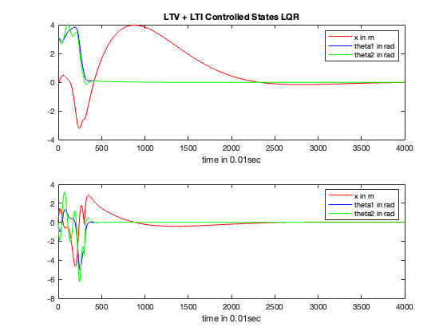

Contents
Determine u_k and state
clear all; clc; close all
load_prev = 1;
Uncomment the Following Code if you need an x_k and u_k using Adjoint method to generate swingup states trajectory
If Previous Trajectory has been generated, run this code
if load_prev == 1
clear all; clc;
load("SavePoint3.mat")
figure(1); clf; subplot(3,1,1); plot(t,x_k(1,:),'r-',t,x_k(2,:),'b-',t,x_k(3,:),'g-'); hold on; title("Openloop State");
subplot(3,1,2); plot(t,x_k(4,:),'r-',t,x_k(5,:),'b-',t,x_k(6,:),'g-'); hold on;
subplot(3,1,3); plot(t,u_k,'r--'); hold on;
end
Find A(t), E(t), B(t) for Each x_k in the swing up phase
s.h=0.01; s.N=T/s.h; s.mc=10; t=[0:s.N]*s.h;
s.m1=1; s.L1=1; s.ell1=s.L1; s.I1=s.m1*s.ell1^2/3;
s.m2=0.5; s.L2=0.5; s.ell2=s.L2; s.I2=s.m2*s.ell2^2/3; alpha=0.1;
s.B=[0; 0; 0; 1; 0; 0]; s.Q=diag([0 0 0 0 0 0]); s.R=0; s.QT=diag([5 40 10 .1 60 10]);
g = 9.81;
for i = 1:length(x_k)
A_temp = Compute_A(x_k(:,i) ,s);
A_t(i) = {A_temp};
end
for i = 1:length(x_k)
E_temp = Compute_E(x_k(1:6,i),s);
E_t(i) = {E_temp};
end
for i = 1:length(x_k)
B_temp = [0; 0; 0; 1; 0; 0];
B_t(i) = {B_temp};
end
for i = 1:length(x_k)
C_temp = [[1 0 0 0 0 0];...
[0 1 0 0 0 0];...
[0 0 1 0 0 0];...
[0 0 0 0 0 0];...
[0 0 0 0 0 0];...
[0 0 0 0 0 0]];
C_t(i) = {C_temp};
end
Compute K(t) using A(t), E(t), B(t), C(t)
h = s.h;
R = .1;
Q = [[1 0 0 0 0 0];...
[0 7 0 0 0 0];...
[0 0 7 0 0 0];...
[0 0 0 1 0 0];...
[0 0 0 0 1 0];...
[0 0 0 0 0 1]];
X_t = {};
X_t(length(u_k)) = {eye(6)};
for i = length(u_k):-1:2
f1 = KRiccati(E_t{i},A_t{i},B_t{i},X_t{i},R,Q);
f2 = KRiccati(E_t{i},A_t{i},B_t{i},X_t{i} - f1*h/2,R,Q);
f3 = KRiccati(E_t{i},A_t{i},B_t{i},X_t{i} - f2*h/2,R,Q);
f4 = KRiccati(E_t{i},A_t{i},B_t{i},X_t{i} - f3*h,R,Q);
X_t{i-1} = X_t{i} - h*(f1/6 + f2/3 + f3/3 + f4/6);
end
for i = 1:length(u_k)
K_t(i) = {-inv(R)*B_t{i}'*X_t{i}};
end
Compute L(t) using A(t), E(t), B(t), C(t)
Q1 = eye(6);
Q2 = eye(6);
P_t = {};
P_t(1) = {eye(6)};
for i = 1:1:length(u_k)
f1 = KRiccati(E_t{i},A_t{i},B_t{i},X_t{i},R,Q);
f2 = KRiccati(E_t{i},A_t{i},B_t{i},X_t{i} + f1*h/2,R,Q);
f3 = KRiccati(E_t{i},A_t{i},B_t{i},X_t{i} + f2*h/2,R,Q);
f4 = KRiccati(E_t{i},A_t{i},B_t{i},X_t{i} + f3*h,R,Q);
P_t{i+1} = P_t{i} + h*(f1/6 + f2/3 + f3/3 + f4/6);
end
for i = 1:length(u_k)
L_t(i) = {-P_t{i}*C_t{i}'*inv(Q2)};
end
Uncomment this section to check eigenvalues of the control + observation system
Plot State Trajectory using K(t) Controller
dx_prime = {};
x_prime(:,1) = [0 0 0 0 0 0]';
for i = 1:1:length(u_k)-1
f1 = inv(E_t{i})*(A_t{i} + B_t{i})* x_prime(:,i) - inv(E_t{i})*B_t{i}*K_t{i}*x_k(1:6,i) + inv(E_t{i})*B_t{i}*u_k(i);
f2 = inv(E_t{i})*(A_t{i} + B_t{i})* (x_prime(:,i) + f1*h/2) - inv(E_t{i})*B_t{i}*K_t{i}*x_k(1:6,i) + inv(E_t{i})*B_t{i}*u_k(i);
f3 = inv(E_t{i})*(A_t{i} + B_t{i})* (x_prime(:,i) + f2*h/2) - inv(E_t{i})*B_t{i}*K_t{i}*x_k(1:6,i) + inv(E_t{i})*B_t{i}*u_k(i);
f4 = inv(E_t{i})*(A_t{i} + B_t{i})* (x_prime(:,i) + f3*h) - inv(E_t{i})*B_t{i}*K_t{i}*x_k(1:6,i) + inv(E_t{i})*B_t{i}*u_k(i);
x_prime(:,i+1) = x_prime(i) + h*(f1/6 + f2/3 + f3/3 + f4/6);
end
x_sim = x_k(1:6, :) + x_prime*h;
figure(2); subplot(2,1,1); plot(t,x_k(1,:),'r--',t,x_k(2,:),'b--',t,x_k(3,:),'g--'); hold on; title("Openloop State vs Closeloop Control State")
legend("OL x in m", "OL theta1 in rad", "OL theta2 in rad")
subplot(2,1,2); plot(t,x_k(4,:),'r--',t,x_k(5,:),'b--',t,x_k(6,:),'g--'); hold on;
legend("OL dx in m", "OL dtheta1 in rad", "OL dtheta2 in rad")
figure(2); subplot(2,1,1); plot(t,x_sim(1,:),'r',t,x_sim(2,:),'b',t,x_sim(3,:),'g');
legend("OL x in m", "OL theta1 in rad", "OL theta2 in rad", "CL x in m", "CL theta1 in rad", "CL theta2 in rad")
subplot(2,1,2); plot(t,x_sim(4,:),'r-',t,x_sim(5,:),'b-',t,x_sim(6,:),'g-');
legend("OL dx in m", "OL dtheta1 in rad", "OL dtheta2 in rad", "CL dx in m", "CL dtheta1 in rad", "CL dtheta2 in rad")
Add Estimation Technique to system using L(t)
x_hat_prime(:,1) = [0 0 0 0 0 0]';
for i = 1:1:length(u_k)-1
f1 = (inv(E_t{i})*A_t{i} + L_t{i}*C_t{i})* x_hat_prime(:,i)...
+ (2*L_t{i}*C_t{i} - inv(E_t{i})*B_t{i}*K_t{i})*x_k(1:6, i)...
+ (L_t{i}*C_t{i} + inv(E_t{i})*B_t{i}*K_t{i})*x_prime(:,i)...
+ inv(E_t{i})*B_t{i}*u_k(i);
f2 = (inv(E_t{i})*A_t{i} + L_t{i}*C_t{i})* (x_hat_prime(:,i) + f1*h/2) ...
+ (2*L_t{i}*C_t{i} - inv(E_t{i})*B_t{i}*K_t{i})*x_k(1:6, i)...
+ (L_t{i}*C_t{i} + inv(E_t{i})*B_t{i}*K_t{i})*x_prime(:,i)...
+ inv(E_t{i})*B_t{i}*u_k(i);
f3 = (inv(E_t{i})*A_t{i} + L_t{i}*C_t{i})* (x_hat_prime(:,i) + f2*h/2) ...
+ (2*L_t{i}*C_t{i} - inv(E_t{i})*B_t{i}*K_t{i})*x_k(1:6, i)...
+ (L_t{i}*C_t{i} + inv(E_t{i})*B_t{i}*K_t{i})*x_prime(:,i)...
+ inv(E_t{i})*B_t{i}*u_k(i);
f4 = (inv(E_t{i})*A_t{i} + L_t{i}*C_t{i})* (x_hat_prime(:,i) + f3*h) ...
+ (2*L_t{i}*C_t{i} - inv(E_t{i})*B_t{i}*K_t{i})*x_k(1:6, i)...
+ (L_t{i}*C_t{i} + inv(E_t{i})*B_t{i}*K_t{i})*x_prime(:,i)...
+ inv(E_t{i})*B_t{i}*u_k(i);
x_hat_prime(:,i+1) = x_hat_prime(i) + h*(f1/6 + f2/3 + f3/3 + f4/6);
end
x_estimation_sim = x_k(1:6, :) + x_hat_prime*h;
figure(3); subplot(2,1,1); plot(t,x_k(1,:),'r--',t,x_k(2,:),'b--',t,x_k(3,:),'g--'); hold on; title("Openloop State vs Control+Estimation State")
legend("OL x in m", "OL theta1 in rad", "OL theta2 in rad")
xlabel("time in 0.01sec")
subplot(2,1,2); plot(t,x_k(4,:),'r--',t,x_k(5,:),'b--',t,x_k(6,:),'g--'); hold on;
legend("OL dx in m", "OL dtheta1 in rad", "OL dtheta2 in rad", "OL x in m", "OL theta1 in rad", "OL theta2 in rad")
xlabel("time in 0.01sec")
figure(3); subplot(2,1,1); plot(t,x_estimation_sim (1,:),'r',t,x_estimation_sim (2,:),'b',t,x_estimation_sim (3,:),'g');
legend("OL x in m", "OL theta1 in rad", "OL theta2 in rad", "FS x in m", "FS theta1 in rad", "FS theta2 in rad")
xlabel("time in 0.01sec")
subplot(2,1,2); plot(t,x_estimation_sim (4,:),'r',t,x_estimation_sim (5,:),'b',t,x_estimation_sim (6,:),'g');
legend("OL x in m", "OL theta1 in rad", "OL theta2 in rad", "FS x in m", "FS theta1 in rad", "FS theta2 in rad")
xlabel("time in 0.01sec")
Warning: Ignoring extra legend entries.
Part LTI Component of Control Problem
E44 = s.m1 + s.m2 + s.mc; E45 = -s.m1*s.L1; E46 = -s.m2*s.L2;
E54 = -s.m1*s.L1 ; E55 = s.I1 + s.m1*s.L1^2;
E64 = -s.m2*s.L2 ; E66 = s.I2 + s.m2*s.L2^2;
E_bar = [[1 0 0 0 0 0];...
[0 1 0 0 0 0];
[0 0 1 0 0 0];
[0 0 0 E44 E45 E46];
[0 0 0 E54 E55 0 ];
[0 0 0 E64 0 E66]];
A52 = s.m1*g*s.L1;
A63 = s.m2*g*s.L2;
A_bar = [[0 0 0 1 0 0];...
[0 0 0 0 1 0];
[0 0 0 0 0 1];
[0 0 0 0 0 0];
[0 A52 0 0 0 0];
[0 0 A63 0 0 0]];
B_bar = [0 0 0 1 0 0]';
A = E_bar^-1 * A_bar;
B = E_bar^-1 * B_bar;
C = [[1 0 0 0 0 0];...
[0 1 0 0 0 0];...
[0 0 1 0 0 0];...
[0 0 0 0 0 0];...
[0 0 0 0 0 0];...
[0 0 0 0 0 0]];...
D = [0 0 0 0 0 0]';
E = eye(6);
Solve for LTI Controller Gain K and Observer Gain L
Q = diag([1.2 1 1 1 80 80]);
R = 3;
[X,K_inf, nouseeig] = icare(A,B,Q,R);
Q1 = eye(6);
Q2 = eye(6);
[P, L_inf, ect] = icare(A', C', Q1, Q2) ;
March States Starting from time T on the Estimated Simulated LQR States using RK4
T_inf = 40;
for i = 301:1:T_inf/h
f1 = (A-B*K_inf)*x_sim(:,i);
f2 = (A-B*K_inf)*(x_sim(:,i) + f1*h/2) ;
f3 = (A-B*K_inf)*(x_sim(:,i) + f2*h/2) ;
f4 = (A-B*K_inf)*(x_sim(:,i) + f3*h) ;
x_sim(:,i+1) = x_sim(:,i) + h*(f1/6 + f2/3 + f3/3 + f4/6);
end
t_inf = 0:T_inf/h;
figure(4); subplot(2,1,1); plot(t_inf,x_sim(1,:),'r',t_inf,x_sim(2,:),'b',t_inf,x_sim(3,:),'g'); title("LTV + LTI Controlled States LQR")
legend("x in m", "theta1 in rad", "theta2 in rad"); xlabel("time in 0.01sec")
subplot(2,1,2); plot(t_inf,x_sim(4,:),'r',t_inf,x_sim(5,:),'b',t_inf,x_sim(6,:),'g');
legend("x in m", "theta1 in rad", "theta2 in rad");xlabel("time in 0.01sec")

March States Starting from time T on the Estimated LQG States using RK4
for i = 301:1:T_inf/h
f1 = (A-L_inf'*C)*x_estimation_sim(:,i) - B*K_inf*x_estimation_sim(:,i) + L_inf'*C*x_sim(:,i);
f2 = (A-L_inf'*C)*x_estimation_sim(:,i) - B*K_inf*x_estimation_sim(:,i) + L_inf'*C*x_sim(:,i);
f3 = (A-L_inf'*C)*x_estimation_sim(:,i) - B*K_inf*x_estimation_sim(:,i) + L_inf'*C*x_sim(:,i);
f4 = (A-L_inf'*C)*x_estimation_sim(:,i) - B*K_inf*x_estimation_sim(:,i) + L_inf'*C*x_sim(:,i);
x_estimation_sim(:,i+1) = x_estimation_sim(:,i) + h*(f1/6 + f2/3 + f3/3 + f4/6);
end
figure(5); subplot(2,1,1); plot(t_inf,x_estimation_sim(1,:),'r',t_inf,x_estimation_sim(2,:),'b',t_inf,x_estimation_sim(3,:),'g'); title("LTV + LTI Controlled + Obserber States (LQG)")
legend("x in m", "theta1 in rad", "theta2 in rad"); xlabel("time in 0.01sec");
subplot(2,1,2); plot(t_inf,x_estimation_sim(4,:),'r',t_inf,x_estimation_sim(5,:),'b',t_inf,x_estimation_sim(6,:),'g');
legend("x in m", "theta1 in rad", "theta2 in rad"); xlabel("time in 0.01sec");